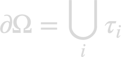

BoundaryElement
BoundaryElement is a base class of the nanobem toolbox that stores the discretized boundary elements

See Hohenester, Nano and Quantum Optics (Springer 2020), chapter 11. For use within BEM, these boundary elements have to be supplemented with shape functions.
Contents
Initialization
% set up array of boundary elements % mat - array of material objects % p - discretized particle boundary % inout - index to material inside and outside obj = BoundaryElement( mat, p1, inout1, p2, inout2, etc );
Properties
obj.inout % material index at inside and outside obj.verts % face vertices obj.mat % vector of material objects obj.pos % centroid position obj.nvec % normal vector obj.area % area obj.nedges % number of edges
Methods
% pairwise distance between boundary elements scaled by bounding box radius % to be used for refinement of Green function elements d = bdist2( obj1, obj2 ); % pairwise distance for K smallest distances % IND is index to smallest elements [ d, ind ] = bdist2( obj1, obj2, k ); % bounding box radius rad = boxradius( obj ); % index to boundary elements which are closest to given positon % IMAT is index of embedding medium [ ind, imat ] = nearest( obj, pos ); % slice into bunches of equal shape and material parameters tau = slice( obj ); % touching boundary elements, N is number of common vertices n = touching( obj1, obj2 ); % vertices of boundary elements, must have same number of edges verts = vertices( obj );
Example
% material array, water and gold mat1 = Material( 1.33 ^ 2, 1 ); mat2 = Material( epstable( 'gold.dat' ), 1 ); % array of material objects mat = [ mat1, mat2 ]; % nanosphere with 10 nm diameter p = trisphere( 144, 10 ); % convert to array of boundary elements tau = BoundaryElement( mat, p, [ 2, 1 ] );
tau =
1�284 BoundaryElement array with properties:
inout verts
Copyright 2022 Ulrich Hohenester